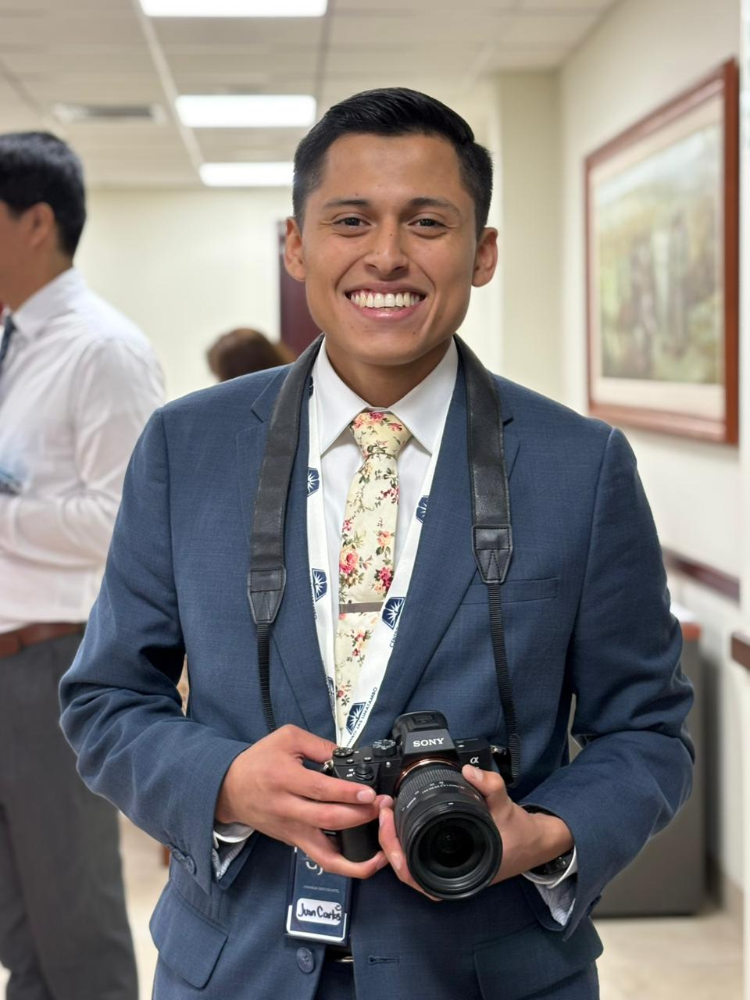

Juan Carlos Reyes Pacheco | WDD 130

Hi, I am Juan Carlos Reyes, i'm from Lima. Peru, i'm a member of the Church of Jesus Christ of Latter Day Saints, i serve as an ordinances worker at the Lima's Temple, also i serve as President of a YSA Council.I like so mucho to spent my time serving others and guiding others to solve their problems. This is a purpose that i like the idea to create programs or sites, which provides tools to helps others to optimize their work or improving their skills.Time is the most important, so we can create many resources to improve the quality and reduce the time which takes to make a specific task.